FROM THE MIDDLE MESOPOTAMIAN PERIOD TO THE MODERN ERA
MIDDLE PERIOD MESOPOTAMIA-900-1100 PE
MEDIEVAL PERIOD1200-1400 PE
LATE PERIOD 1500-PRESENT
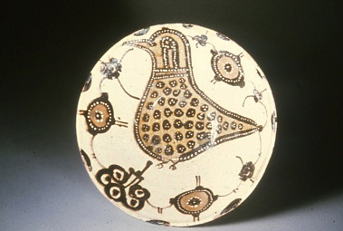
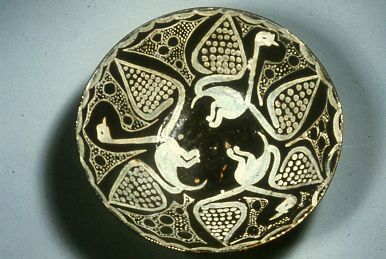
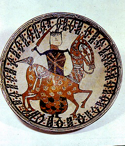
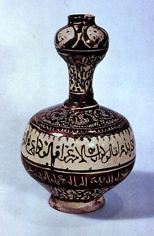
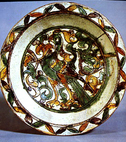
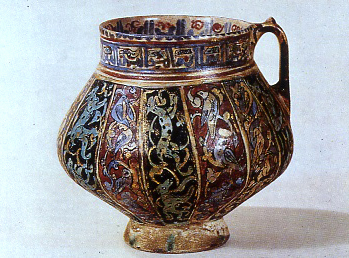
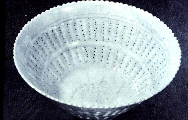
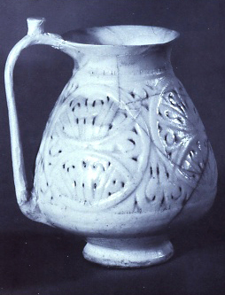
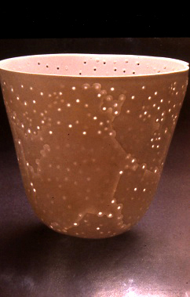
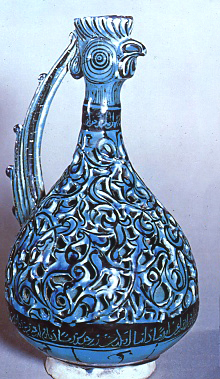
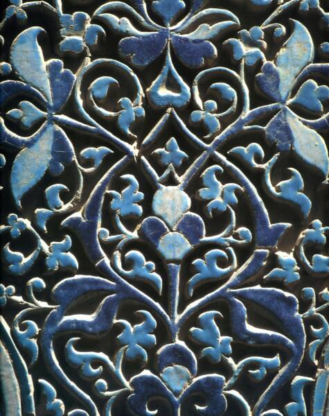
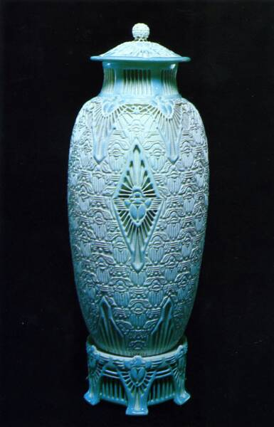
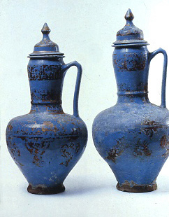
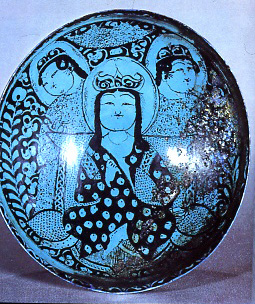
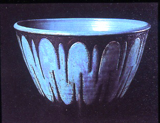
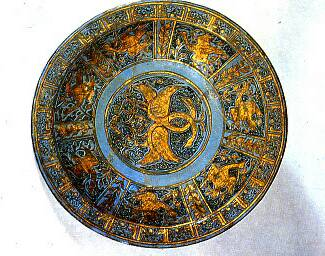
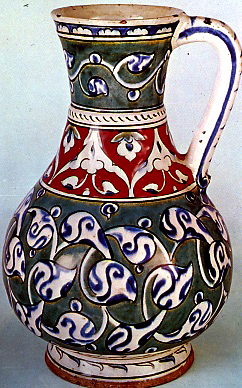
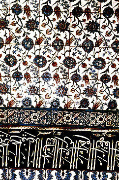
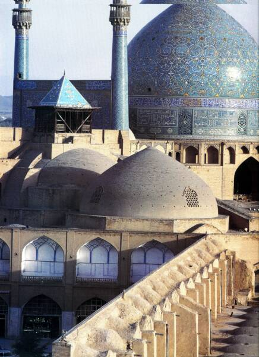
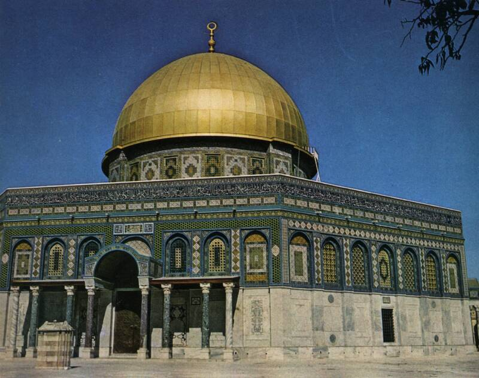
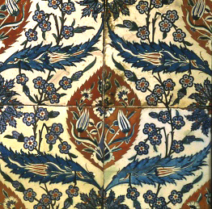
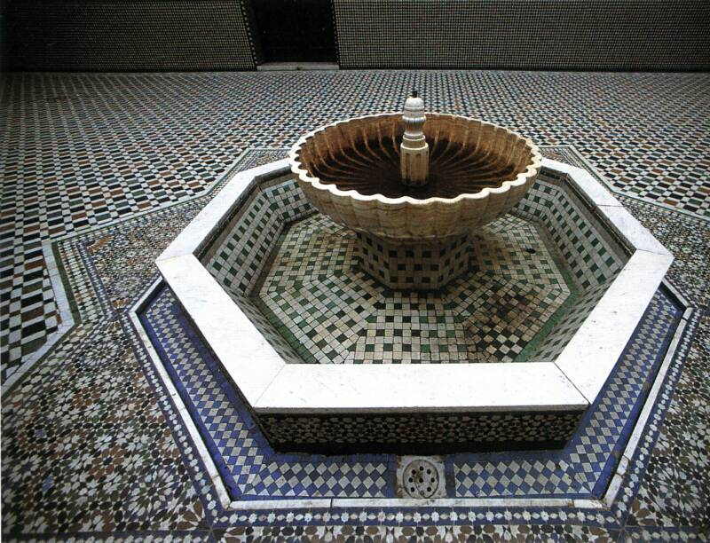
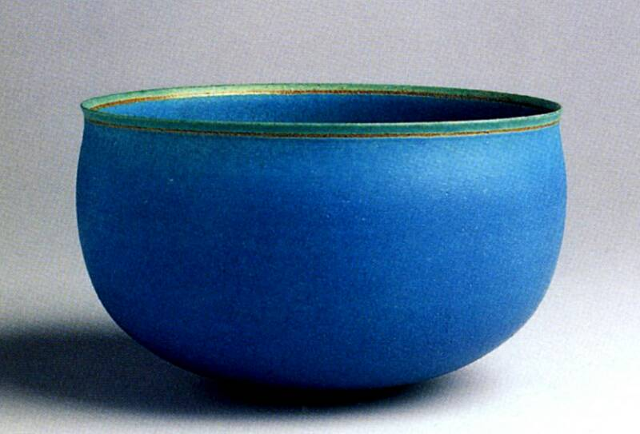
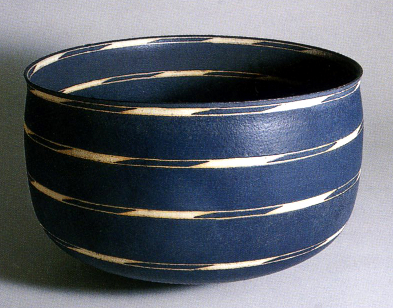
To begin this lecture, I am including a map of the region as it was during this period.
This lecture chronicles the history of Middle Eastern ceramics, beginning with the coiled pots of 900 BPE Mesopotamia up to the modern era. I will use the more contemporary initials, BPE which means, Before the Present Era instead of the formerly used BC, Before Christ.
The “invention” of writing is clearly one of the most important developments of humankind. It was the dawn of the information revolution. Writing provides documented evidence to occurrences; before writing we had to rely upon physical artifacts and archaeologists’ interpretation of their existence.
Our knowledge of prehistory was assumed, rather than verified through personal records. True, when a person identifies an event it is through their perception, but clearly the writing down of facts has provided us with a more accurate account of history than during prehistory, when there was no written word. The invention of writing is credited to the Sumerians of ancient Mesopotamia, around, 3500 BPE. Archaeologists at the site of “Tell Asmar”, an area in Iraq, unearthed the earliest clay tablets, which contained written accounts of the day. Original “pictograms” were embedded into these clay tablets, and later became simplified wedge shaped signs pressed into the clay with a reed stylus. This writing was called “cuneiform”. An example of these kind of clay tablets is from Babylon. Here is shown an envelope and a tablet with such cuneirform text that depicts a court litigation. These tablets were created in 1,500-1,400 BPE. I find these incredibly exciting, as they give us a vision of how that period functioned in their daily lives.
This lecture continues into 900 PE, the Present Era, with the beautiful decorated plates of the region. Nishapur, Abbasid and Sari were highly sophisticated ceramic centers that produced beautiful decorated painted pottery. You can locate Nishapur and Sari on the map in the northeastern region. Upon viewing the first few images, we see the traditional angular brush strokes reminiscent of cuneiform writing in a lovely band circling the plate. We are viewing the plate as if we are looking down into it. The painted medium was usually a darker more refined ground clay, which was painted onto the pot’s surface, and then a glaze was added. The darker clay painting would fire through the glazed surface creating a smoothly painted image. On the plate from Abbasid, we see the painting more organic in style and the mineral cobalt used. Cobalt blue was essential to ceramic decorative ware and its use originated in the Middle East; it was then transported over to the Far East- China, Japan and Korea, where those potteries used it extensively. The plates from Abbasid and the following Sari ware, exhibit another popular decorative style, motifs that originated from nature- leaves, birds and flowers. As their palette of designs developed, so did the decorative and sophisticated appearance of their ceramics. During this period, the ware was simply decorated, a painted image under a simple clear glaze, hence the term, Painted Pottery became a traditional type of ware.
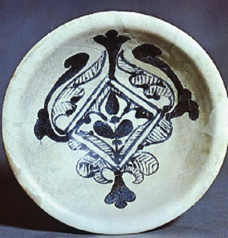
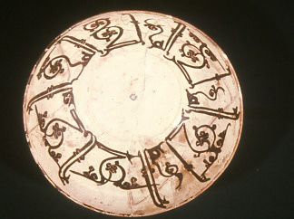
Nishapur, 900 PE
Abbasid, Iraq, 900 PE
Sari, Plate with Bird, 1000 PE, painted pottery
One of my favorite plates of this period is the Nishapur Duck Plate, from the 10th century PE. I love this design, and it clearly exhibits how sophisticated the Mesopotamian potters had become. The beautiful duck paintings parade around the circumference of the plate in a lively almost joyful movement, their decorated wings soaring upward to the edge of the plate. This rhythmic dance creates a black negative space that originates in the center and pulses outward, surrounding each duck. Artwork of this caliber is a treasure to view! As we move onto the next plate from 11th century Nishapur, you can see a painting of both a human and a horse and that angular text like drawing that creates the border of the plate. Here, we begin seeing polychrome painted surfaces.
Nishapur, Dish With Foliage and Ducks
1000 PE, Painted Pottery
Nishapur, Plate With Horse and Man,
11th c., polychrome painted pottery
The Ewer from the 12-13th century is a fine example of Islamic lusterware, where copper metallic oxides are incorporated into a final glaze application, creating a type of glaze that became synonymous with Islamic ware. The double spherical form became a typical form of pottery and is exhibited throughout their ceramic oeuvre. The 12th century plate from Ray is a beautiful example of their cobalt blue decoration, here, a man and a horse surrounded by angular decorative motifs. This cobalt blue and then opulent turquoise became trademarks of Islamic ceramics. The Ayyubid plate is another example of polychrome painting, but in particular this palette of colors is very reminiscent of Tang Chinese polychrome painting, which shows their proximity and exchange of glazes.
Islamic, Ewer, 12- 13th c.
Copper Luster
Ray, Plate with Horse and Man, 12th c
Syria, Ayyubid, 12-13th c.
Polychrome Glazes
t.
Another Ewer, from Ray, presents the angularity of form and lovely metallic luster in their glazes that became popular to that region.
RAY, Ewer, 12th c.
Polychrome Glazes
The Seljuk period of the 12th century provides us with a wonderful example of the creativity of the Islamic potters. As we examine Seljuk pottery, we associate it with a highly sophisticated level of artistic development in Islamic ceramics, similar in regard to the admirable pottery of Song Dynasty China. A unique type of pottery produced from this period is represented by these tiny holes that surrounded the ware in various patterns. These “little windows” were actual holes that when glazed thickly with a clear glaze, became filled with a clear solid. This created a window, or transparent area that allowed light to pass through, making the ware have similar qualities to translucent porcelain. The Islamic potters did not have a true porcelain recipe, their white ware was not transparent; these holes seemed to replicate this effect. When viewing the representative bowl and ewer, we see the evidence of light dancing through the forms. This ingenuity awarded the Islamic potters an indelible mark in the history of ceramics. This early Seljuk potters’ technique appears to have greatly influenced Jacqueline Poncelet’s beautiful ethereal vessels.
Seljuk, Bowl With Pierced Holes,12th c.
Seljuk, Iran, Ewer With Pierced Holes 12th c.
Jacquelene Poncelet, UK
Seljuk Inspired, 1975
Another element attributed to the Islamic potters is seen in their carved “pierced” ware. Intricately engraved lines meandered throughout the work, creating a surface that appeared to be executed from a double wall, so deep were the carvings. This created a unique level of depth and rhythm to their richly glazed forms. As shown in the Ewer With Bird Spout and the glazed tile, both from 13th century Seljuk Iran, this technique developed into a new tradition that would epitomize Islamic pottery. This deeply carved surface was seen all over Europe and was later employed by many ceramists of the modern world, as seen in Adelaide Robineau’s famous Scarab Vase.
Seljuk, Iran,
Ewer With Bird Spout 13th c.
Iran, Shad-I Mulk Aga Mausoleum,
Pierced Glazed Tile, Seljuk Inspired
Adelaide Alsop Robineau,
The Scarab Vase, 1910
Islamic potters were also known for their striking combination of blues and blacks. The blues would traditionally vary from a deep sky blue to a luminescent turquoise. This turquoise blue would become the signature color of their art. They used this glaze embellished with gold luster, carved in frenetic patterns and juxtaposed with a rich black on a painterly surface. The Saveh ewers and the Seljuk plate artfully exemplify this popular style. Perhaps this prevailing design was the inspiration for Maija Grotell’s exquisitely painted bowls of turquoise and black.
Saveh, Two Ewers With Gold Luster,
13th c.
Seljuk, Iran
Turquoise and Black Glazed Plate
13th c.
Maija Grotell,
Turquoise and Black Glazed Plate
1956
The 14th century brought a new level of complexity in painting as seen in the Sultanibad plate with gold luster. It established the implementation of a more polychrome palette as also exemplified by the Iznik pitcher. This sumptuously painterly surface was utilized in the dynamically painted tiles that would pervade their building facades and interior walls for centuries. Islamic architecture is renowned for its use of polychrome tiles and richly engraved surfaces. Islamic architecture developed a new sense of design and showcased their Mosques’ elaborate exterior and interior walls. The integration of ceramics and architecture has seen no rival.
Sultanibad, Plate with Gold Luster
14th c.
Iznik, Turkey, Pircher, 1570-80
Iznik, Turkey.
Pprcelaon Tiles, 16th c.
Turkey, Iznik
Tiles, 1600
The Islamic world witnessed the height of ceramic art through their architecture; they have since struggled to enter the modern world of artist potters. As we see in Turkish ceramist Alev Ebuzziya’s bowls, the Middle East is making their way towards excellence in the 21st century.
Clearly, the Middle East is in a state of tremendous turmoil. As we view this lecture, we remember that at one time this region contributed some of the most beautiful artwork in the world. Struggle begets art- who knows what will arise from these difficult times?
Looking at these clay tablets provides a wondrous glance into the importance of clay during this period of history. Not only did clay provide plates to eat upon and urns from which to drink wine, it provided the substance that gave us the written word. On the pottery produced in this area we see carved and painted strokes that relate to these angular “signs”, providing a decorative element that is typical of the pottery of the Middle East.